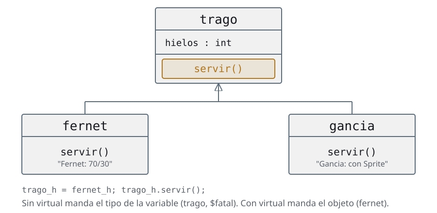
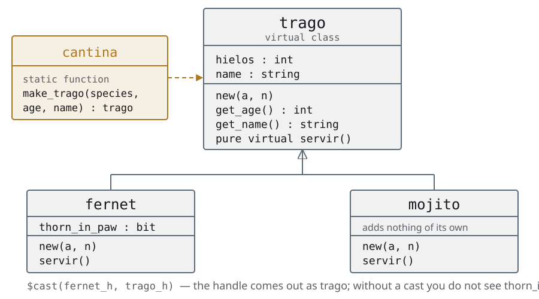

Día 2La OOP que UVM da por sabida
Las mismas slides del deck, con las notas del instructor adentro del texto y el código completo. Si estás haciendo el curso solo, empezá por acá y tené el deck al lado para los repasos.
Agenda
Día 2 · ≈ 4 h · unidad 3 · la OOP que UVM da por sabida
- Clases y extensiones
- Polimorfismo
- Variables y métodos estáticos
- Clases paramétricas
- El patrón factory
- Un testbench sin un solo módulo
Clases y extensiones
¿Por qué OOP en un testbench?
- El testbench convencional es un módulo: se elabora una vez, existe desde
el
time 0hasta el$finish, y siempre es el mismo - Un estímulo no se parece en nada a eso: aparece, viaja por el testbench, se compara y se tira. Eso no es un módulo, es un objeto
- Módulos = estructura, se elaboran. Clases = datos y comportamiento, se crean y se destruyen mientras la simulación corre
- Y no es opcional: UVM es una librería de clases.
uvm_test,uvm_component,uvm_object. Sin esto, el resto del curso no se puede leer
Acá está el muro real del curso, y no es UVM: es OOP. El que llega de RTL nunca escribió una clase, y a partir de los tests todo son clases. Si el grupo viene de software, esta unidad se pasa rápido y se gana tiempo para el día 3. Si viene de RTL, es la unidad donde hay que gastar el tiempo que sobre, aunque haya que sacarlo de otro lado. La pregunta que ordena todo: ¿esto existe todo el tiempo o aparece y se va? Lo primero es un módulo; lo segundo, un objeto.
Clases y extensiones
Lo que una struct no puede hacer
code/u3/clases/structs.svtypedef struct {
int length;
int width;
} rectangle_struct;
typedef struct {int side;} square_struct;
module top_struct;
rectangle_struct rectangle_s;
square_struct square_s;
initial begin
rectangle_s.length = 50;
rectangle_s.width = 20;
$display("rectangle area: %0d", rectangle_s.length * rectangle_s.width);
square_s.side = 50;
$display("square area: %0d", square_s.side ** 2);
end
endmodule- La
structguarda datos y nada más: la cuenta del área hay que escribirla afuera, y de nuevo en cada lugar donde se necesite square_structno tiene ninguna relación conrectangle_struct, aunque un cuadrado sea un caso particular de un rectángulo- No se randomiza sola, no se compara sola, no se imprime sola
Conviene arrancar preguntando qué tiene de malo la struct, porque la respuesta
espontánea es "nada" — y tienen razón: para guardar tres campos anda perfecto. El
curso no viene a decir que la struct esté mal, viene a decir dónde se queda
corta.
Los tres bullets son tres cosas distintas y conviene separarlas. La primera es
cohesión: el dato está acá y la operación sobre el dato está en otro archivo,
así que nada obliga a que estén de acuerdo. La segunda es herencia: un
cuadrado es un rectángulo y el lenguaje no tiene forma de decirlo, así que se
copia y pega. La tercera es la que se va a cobrar el día 5: un command_s no
sabe randomizarse ni compararse consigo mismo, y todo eso hay que escribirlo
afuera, una vez por cada lugar que lo use.
El remate honesto, para que nadie se lleve una idea religiosa: el command_s del
testbench convencional es una struct, funciona, y estuvo bien mientras el
testbench era un módulo. Lo que cambia es la escala.
Clases y extensiones
La primera clase: datos, métodos y constructor
code/u3/clases/rectangle_only.svclass rectangle;
int length;
int width;
function new(int l, int w);
length = l;
width = w;
endfunction
function int area;
return length * width;
endfunction
endclass : rectangle
module top_rectangle;
rectangle rectangle_h;
initial begin
rectangle_h = new(.l(50), .w(20));
$display("rectangle area: %0d", rectangle_h.area());
end
endmodule : top_rectangle- La clase junta los datos (
length,width) con lo que se hace con ellos (area()). El área se calcula en un solo lugar new()es el constructor: corre una vez, cuando se crea el objeto.l(50)es pasaje de argumentos por nombre. UVM lo usa todo el tiempo
La comparación con la slide anterior es la clase entera: los mismos dos campos,
más una función que antes vivía suelta. Vale señalar area() y decir que ésa es
toda la diferencia — el dato y lo que se hace con el dato viajan juntos.
new() conviene presentarlo sin misterio: es una función común, con un nombre
reservado, que el simulador llama sola cuando se crea el objeto. Devuelve el
handle. No hace nada mágico y no hay un destructor del otro lado.
El pasaje por nombre parece cosmético y no lo es: cuando el constructor tenga
cinco argumentos —y el de uvm_component tiene dos que siempre son los
mismos— .l(50) es lo que hace que la llamada se lea sin ir a buscar la firma.
Todo code/ del curso está escrito así.
Y la pregunta para dejar picando, que se contesta en la slide siguiente: si
declaro rectangle r; y no llamo a new(), ¿cuántos objetos hay?
Clases y extensiones
Handle y objeto no son la misma cosa
rectangle rectangle_h; // 1. un HANDLE. Todavia no hay objeto: vale null
rectangle_h = new(.l(50), .w(20)); // 2. new() crea el OBJETO y devuelve su handle
- Declarar un handle no crea nada. Hasta el
new()valenull, y usarlo ahí revienta en tiempo de simulación, no de compilación - El handle se parece a un puntero, pero no admite aritmética: no hay
h + 1 - La memoria de una
structla reserva el simulador apenas la ve; la de un objeto, recién en elnew() - Y no hay
free(): cuando no queda ningún handle apuntándolo, el objeto se recolecta solo
El null pointer es EL error de la primera semana, y el mensaje de Verilator no
ayuda: te dice que dereferenciaste null, no dónde te faltó el new().
Vale la pena escribir las dos líneas en el pizarrón y preguntar cuántos objetos
hay después de cada una. La respuesta es cero y uno.
Esto vuelve dos veces más en el curso: en las jerarquías de clases, cuando obj1_h = obj2_h
copia el handle y no el objeto; y en los tests, cuando la virtual interface que no
se leyó del config_db queda en null.
Clases y extensiones
Extender: extends y super
code/u3/clases/classes.sv · #rectangle-and-squareclass rectangle;
// Data members
int length;
int width;
function new(int l, int w);
length = l;
width = w;
endfunction
function int area();
return length * width;
endfunction
endclass
// Extendiendo Clases!
class square extends rectangle;
// Override Constructor
function new(int side);
//super: llamado a metodo de padre
super.new(.l(side), .w(side));
endfunction
endclassel archivo entero, 48 líneas
// Memory Management: creating an object and passing it around the TB means
// allocating memory and sharing it between threads
// The simulator treats a class differently from a struct
// It allocates the memory of a struct as soon as it sees it,
// while for classes that has to be done with new()
class rectangle;
// Data members
int length;
int width;
function new(int l, int w);
length = l;
width = w;
endfunction
function int area();
return length * width;
endfunction
endclass
// Extendiendo Clases!
class square extends rectangle;
// Override Constructor
function new(int side);
//super: llamado a metodo de padre
super.new(.l(side), .w(side));
endfunction
endclass
module top_class;
//Handle: like a pointer, but arithmetic on it is not allowed
rectangle rectangle_h;
square square_h;
initial begin
rectangle_h = new(.l(50), .w(20));
$display("rectangle area: %0d", rectangle_h.area());
square_h = new(.side(50));
$display("square area: %0d", square_h.area());
// Since a square is a particular case of a rectangle:
// can rectangle_h point to a square? Yes, polymorphism
end
endmodulesquare extends rectangleheredalength,widthyarea()sin copiar una línea. Un cuadrado es un rectángulo con una restricción, y el código lo dice así- El constructor del hijo llama a
super.new(): la parte de arriba del objeto también hay que construirla, y va primero - Extender no es copiar: si mañana
area()cambia, cambia para los dos
El orden del constructor es lo primero que hay que fijar, porque es obligatorio y
falla feo: super.new() va antes que cualquier otra cosa del hijo. La razón
es física — el objeto es uno solo, y la parte que aporta la clase base tiene que
estar construida antes de tocar nada. Si te lo olvidás, SystemVerilog lo llama
solo cuando el constructor de la base no lleva argumentos, y no compila cuando sí
los lleva. El día 3, uvm_component los lleva.
El último bullet es el argumento entero de la unidad y vale decirlo con un
ejemplo: si area() cambia mañana, en la versión con struct hay que acordarse
de los dos lugares; acá cambia en uno y el otro se entera solo. Ese "se entera
solo" es lo que se compra con la herencia, y es la misma promesa que el día 6
hace el env con los tests.
Y el aviso de hacia dónde va, para que la palabra no aparezca fría en la slide
siguiente: heredar deja al hijo usar lo del padre. Lo que todavía no se puede
es que el padre llame a la versión del hijo — eso es polimorfismo, y es la sección
que sigue.
Clases y extensiones
Dónde reaparece todo esto
| Lo que acabás de ver | Cómo se llama en UVM |
|---|---|
| clase con datos y métodos | uvm_object — las transactions del día 5 |
| clase que además vive en el árbol del TB | uvm_component — driver, monitor, scoreboard |
new() |
el constructor, con name (y parent si es un component) |
extends |
cada test, cada tester, cada agent del curso |
super.new() |
la primera línea obligatoria de todo constructor de UVM |
- Falta una pieza: guardar un objeto
squareen una variablerectangle. Eso es la unidad que sigue
Cerrar con la tabla y no con el ejemplo: el alumno tiene que irse sabiendo que esto no era un rodeo de programación, era el vocabulario del resto del curso. El último bullet deja la puerta abierta al polimorfismo, que es lo único que falta para poder leer una factory.
Clases y extensiones
Resumen de la unidad
- Módulos = estructura, se elaboran una vez y viven para siempre. Clases = datos y comportamiento, se crean y se tiran en simulación
- Un estímulo se parece a lo segundo, no a lo primero. Por eso el testbench se muda a clases — y por eso UVM es una librería de clases
- Una
structguarda datos y nada más. Una clase junta los datos con lo que se hace con ellos, y además se puede extender - Declarar un handle no crea nada. Hasta el
new()valenull, y usarlo ahí es el error que más se repite en toda la semana - No hay
free(): cuando no queda ningún handle apuntando al objeto, se lo lleva el garbage collector - Extender una clase es agregarle o redefinirle cosas sin tocar la original. Es la base de todo lo que viene
Cierre de la unidad que abre el día más abstracto del curso. Conviene anclar con
la promesa concreta: todo esto existe para que el testbench del día 1 se pueda
escribir sin un solo módulo, y para que en el env se pueda cambiar el estímulo
sin tocar el env.
El null merece una vuelta más porque vuelve tres veces: acá, en los tests
con la virtual interface que no se leyó del config_db, y en las jerarquías de clases cuando
obj1_h = obj2_h copia el handle y no el objeto.
Polimorfismo
Una variable trago, un objeto fernet: ¿cuál servir() corre?

- Un
fernetes untrago, así que guardarlo en una variabletragocompila y es legal - La pregunta es la otra: cuando llamás al método por esa variable, ¿SystemVerilog mira el tipo de la variable o el tipo del objeto?
- La respuesta por defecto es la que no querés, y la palabra que la cambia es una sola
Es el concepto que sostiene todo lo que viene: la factory, los overrides, las
transactions. El que se pierde acá se pierde el resto del curso, así que no
conviene avanzar hasta que todos vean por qué la variable puede ser de la clase
base.
Conviene hacer votar antes de mostrar el código: "¿qué imprime?". La mitad del
aula dice "Fernet", y ver que se equivocan es lo que fija el concepto.
Y avisarlo antes de que lo pregunten: en SystemVerilog virtual está
sobrecargado — virtual method, virtual class y virtual interface son tres cosas
distintas. Acá es la primera.
Polimorfismo
Las tres clases: un trago que no se sabe servir
code/u3/polimorfismo/01-sin-virtual/not_virtual.sv · #three-classesclass trago;
int hielos = -1;
function new(int a);
hielos = a;
endfunction : new
function void servir();
$fatal(1, "A generic trago cannot be served: order a real one.");
endfunction : servir
endclass : trago
class fernet extends trago;
function new(int hielos);
super.new(hielos);
endfunction : new
function void servir();
$display("Fernet: 70/30, and the coke last");
endfunction : servir
endclass : fernetel archivo entero, 66 líneas
// Basic polymorphism, WITHOUT virtual: the case that fails. See the polymorphism section.
class trago;
int hielos = -1;
function new(int a);
hielos = a;
endfunction : new
function void servir();
$fatal(1, "A generic trago cannot be served: order a real one.");
endfunction : servir
endclass : trago
class fernet extends trago;
function new(int hielos);
super.new(hielos);
endfunction : new
function void servir();
$display("Fernet: 70/30, and the coke last");
endfunction : servir
endclass : fernet
class mojito extends trago;
function new(int hielos);
super.new(hielos);
endfunction : new
function void servir();
$display("Mojito: mint, lime and crushed ice");
endfunction : servir
endclass : mojito
module top;
initial begin
fernet fernet_h;
mojito mojito_h;
trago trago_h;
fernet_h = new(15);
fernet_h.servir();
$display("The fernet has %0d ice cubes", fernet_h.hielos);
mojito_h = new(1);
mojito_h.servir();
$display("The mojito has %0d ice cubes", mojito_h.hielos);
// The variable is trago, the object is fernet.
trago_h = fernet_h;
trago_h.servir(); // ** Fatal: A generic trago cannot be served
$display("The trago has %0d ice cubes", trago_h.hielos);
trago_h = mojito_h;
trago_h.servir();
$display("The trago has %0d ice cubes", trago_h.hielos);
end // initial begin
endmodule : toptragodefineservir()con un$fatal: la clase base no sabe con qué se sirve, y lo dice fuertefernetymojitoextiendentragoy redefinenservir(), cada uno con el suyomojito—que no entra en pantalla— es igual quefernet, con otro$display
El $fatal en la clase base es un patrón que se ve mucho y que en dos slides
vamos a reemplazar por algo mejor: si el método no se puede implementar acá, lo
correcto no es explotar en simulación, es no dejar compilar.
Que las tres clases tengan un método con el mismo nombre y la misma firma es lo
que hace posible todo lo que sigue. Ahora falta decidir cuál corre, y eso
todavía no está dicho en ningún lado del código.
El archivo entero está en code/u3/polimorfismo/01-sin-virtual/not_virtual.sv.
Polimorfismo
Sin virtual manda la variable, y eso rompe
code/u3/polimorfismo/01-sin-virtual/not_virtual.sv · #the-calls fernet_h = new(15);
fernet_h.servir();
$display("The fernet has %0d ice cubes", fernet_h.hielos);
mojito_h = new(1);
mojito_h.servir();
$display("The mojito has %0d ice cubes", mojito_h.hielos);
// The variable is trago, the object is fernet.
trago_h = fernet_h;
trago_h.servir(); // ** Fatal: A generic trago cannot be served
$display("The trago has %0d ice cubes", trago_h.hielos);
trago_h = mojito_h;
trago_h.servir();
$display("The trago has %0d ice cubes", trago_h.hielos);el archivo entero, 66 líneas
// Basic polymorphism, WITHOUT virtual: the case that fails. See the polymorphism section.
class trago;
int hielos = -1;
function new(int a);
hielos = a;
endfunction : new
function void servir();
$fatal(1, "A generic trago cannot be served: order a real one.");
endfunction : servir
endclass : trago
class fernet extends trago;
function new(int hielos);
super.new(hielos);
endfunction : new
function void servir();
$display("Fernet: 70/30, and the coke last");
endfunction : servir
endclass : fernet
class mojito extends trago;
function new(int hielos);
super.new(hielos);
endfunction : new
function void servir();
$display("Mojito: mint, lime and crushed ice");
endfunction : servir
endclass : mojito
module top;
initial begin
fernet fernet_h;
mojito mojito_h;
trago trago_h;
fernet_h = new(15);
fernet_h.servir();
$display("The fernet has %0d ice cubes", fernet_h.hielos);
mojito_h = new(1);
mojito_h.servir();
$display("The mojito has %0d ice cubes", mojito_h.hielos);
// The variable is trago, the object is fernet.
trago_h = fernet_h;
trago_h.servir(); // ** Fatal: A generic trago cannot be served
$display("The trago has %0d ice cubes", trago_h.hielos);
trago_h = mojito_h;
trago_h.servir();
$display("The trago has %0d ice cubes", trago_h.hielos);
end // initial begin
endmodule : top- Las dos primeras llamadas andan: la variable
fernet_hes de tipofernety el objeto también - La tercera explota.
trago_hapunta a unfernet, pero como el método no es virtual, SystemVerilog resuelve en compilación por el tipo de la variable, y llama alservir()detrago - Se llama static binding: la decisión de qué código correr ya está tomada antes de que exista el objeto
Acá conviene correrlo: bash code/u3/polimorfismo/01-sin-virtual/run.sh. El ejemplo
termina en $fatal a propósito, y el run.sh da PASS justamente cuando ese
mensaje aparece.
La pregunta que siempre sale: "¿y hielos por qué sí sale bien?". Porque los
campos no son virtuales nunca: la variable ve los campos de su propio tipo, y
hielos está en trago. Los métodos son lo único que se puede resolver por
objeto, y sólo si se lo pedís.
Polimorfismo
Métodos virtuales: una palabra, y ahora manda el objeto
code/u3/polimorfismo/02-virtual/virtual.sv · #trago.servir virtual function void servir();
$fatal(1, "A generic trago cannot be served: order a real one.");
endfunction : servirel archivo entero, 67 líneas
// Identical to 01-sin-virtual except for ONE word: trago's servir() is
// now virtual. See the polymorphism section.
class trago;
int hielos = -1;
function new(int a);
hielos = a;
endfunction : new
virtual function void servir();
$fatal(1, "A generic trago cannot be served: order a real one.");
endfunction : servir
endclass : trago
class fernet extends trago;
function new(int hielos);
super.new(hielos);
endfunction : new
function void servir();
$display("Fernet: 70/30, and the coke last");
endfunction : servir
endclass : fernet
class mojito extends trago;
function new(int hielos);
super.new(hielos);
endfunction : new
function void servir();
$display("Mojito: mint, lime and crushed ice");
endfunction : servir
endclass : mojito
module top;
initial begin
fernet fernet_h;
mojito mojito_h;
trago trago_h;
fernet_h = new(15);
fernet_h.servir();
$display("The fernet has %0d ice cubes", fernet_h.hielos);
mojito_h = new(1);
mojito_h.servir();
$display("The mojito has %0d ice cubes", mojito_h.hielos);
trago_h = fernet_h;
trago_h.servir();
$display("The trago has %0d ice cubes", trago_h.hielos);
trago_h = mojito_h;
trago_h.servir();
$display("The trago has %0d ice cubes", trago_h.hielos);
end // initial begin
endmodule : top- Es la única diferencia entre
01-sin-virtualy02-virtual: la keywordvirtualen el método de la clase base - Con eso la llamada se resuelve en simulación, mirando el objeto que hay adentro de la variable — dynamic binding
trago_h.servir()ahora sirve un fernet o un mojito, sin que el que escribe esa línea sepa cuál le va a tocar- Ésa es toda la idea: el que usa el objeto deja de ser el que elige el tipo
Vale correr los dos ejemplos seguidos y mostrar el diff: una palabra.
Un detalle que se pregunta siempre: fernet y mojito no escriben virtual
en su servir(), y sin embargo lo son. Una vez que el método es virtual en
la base, lo es para toda la descendencia. Escribirlo igual no molesta y mucha
gente lo hace por prolijidad.
La regla práctica para el resto del curso: en verificación, todo método que
puedas querer redefinir va virtual. UVM lo hace así — build_phase,
run_phase, do_copy, do_compare son todos virtuales, y por eso el override
del env funciona.
El costo existe y es real —una tabla de métodos y un salto indirecto— pero en un
testbench no lo vas a medir nunca. En RTL sintetizable no hay clases, así que la
discusión no aplica.
Polimorfismo
Clases abstractas: mover el error a la compilación
- El
$fataldetragose entera tarde: compila, corre, y explota en el medio de la simulación. En una regresión de la noche eso es una corrida perdida - SystemVerilog permite declarar una abstract class —
virtual class—: sólo sirve como base, no se puede instanciar - Adentro puede declarar pure virtual methods: métodos sin cuerpo
- Extender la clase obliga a redefinirlos. Si no, es un error de compilación
- El error no desapareció: se mudó a un momento en el que sale barato
Ésta es la slide que hay que dejar clara, porque el criterio se repite todo el
curso: cuanto antes falle, mejor. Compilación mejor que simulación,
simulación mejor que silicio.
En verificación un error de compilación es una buena noticia: la regresión
de la noche no se pierde, y el que rompió algo se entera en un minuto.
Dónde se va a volver a ver: uvm_object y uvm_component están declaradas
virtual class en la librería, así que son abstractas de derecho. Lo que no
hace `uvm_component_utils es obligarte a implementar nada: al revés, te
*provee* el get_type_name() y el type_id del registro. El pure virtual de
verdad en UVM es uvm_subscriber::write(), que vas a tener que escribir sí o sí
en el día 4. Y en el ejercicio del día 2, la clase base del testbench.
Polimorfismo
pure virtual: el mismo ejemplo, sin $fatal posible
code/u3/polimorfismo/03-virtual-pura/pure_virtual.sv · #trago// Abstract class: it only works as a base, it cannot be instantiated.
virtual class trago;
int hielos = -1;
function new(int a);
hielos = a;
endfunction : new
// pure virtual: no body. Extending it forces you to redefine it.
pure virtual function void servir();
endclass : tragoel archivo entero, 67 líneas
// Abstract class: it only works as a base, it cannot be instantiated.
virtual class trago;
int hielos = -1;
function new(int a);
hielos = a;
endfunction : new
// pure virtual: no body. Extending it forces you to redefine it.
pure virtual function void servir();
endclass : trago
class fernet extends trago;
function new(int hielos);
super.new(hielos);
endfunction : new
function void servir();
$display("Fernet: 70/30, and the coke last");
endfunction : servir
endclass : fernet
class mojito extends trago;
function new(int hielos);
super.new(hielos);
endfunction : new
// Deleting this override does NOT compile -- which is exactly the point.
function void servir();
$display("Mojito: mint, lime and crushed ice");
endfunction : servir
endclass : mojito
module top;
initial begin
fernet fernet_h;
mojito mojito_h;
trago trago_h;
// trago_h = new(3); <- does not compile: trago is abstract
fernet_h = new(15);
fernet_h.servir();
$display("The fernet has %0d ice cubes", fernet_h.hielos);
mojito_h = new(1);
mojito_h.servir();
$display("The mojito has %0d ice cubes", mojito_h.hielos);
trago_h = fernet_h;
trago_h.servir();
$display("The trago has %0d ice cubes", trago_h.hielos);
trago_h = mojito_h;
trago_h.servir();
$display("The trago has %0d ice cubes", trago_h.hielos);
end // initial begin
endmodule : topvirtual class tragoya no tiene unservir()que explote: no tiene cuerpo, y por eso no hay nada que pueda correr mal- La línea comentada del
top—trago_h = new(3)— no compila: una clase abstracta no se instancia - Si a
mojitole borrás el override, el compilador dice "Class 'mojito' extends 'trago' but is missing implementation for 'servir'" y ahí termina el asunto
El punto no es el $fatal, es cuándo te enterás: sin clase abstracta
explota en el medio de la simulación, con pure virtual no compila.
Vale hacerlo en vivo: comentar el servir() de mojito y compilar. El
mensaje del compilador es el que enseña.
Y el enganche hacia adelante: la factory usa esto para crear, y el env para
los overrides. Lo que hoy es un fernet y un mojito, mañana va a ser un
base_tester y los testers que lo extienden — misma mecánica, otro vocabulario.
Polimorfismo
Resumen de la unidad
- Un
fernetes untrago, así que entra en una variabletrago. La pregunta es qué código corre cuando llamás al método por esa variable - Sin
virtualmanda la variable (static binding): se decide al compilar, y la clase derivada queda ignorada - Con
virtualmanda el objeto: se resuelve en simulación, mirando qué hay adentro. Es una sola palabra y cambia todo - La idea de fondo, que vuelve en cada sección que sigue: el que usa el objeto deja de ser el que elige el tipo
- Una clase abstracta (
virtual class,pure virtual) mueve el error de simulación a compilación: no se puede instanciar por accidente - En SystemVerilog
virtualestá sobrecargado: virtual method, virtual class y virtual interface son tres cosas distintas
Es la unidad que habilita a la siguiente mitad del curso, y conviene decirlo:
sin polimorfismo no hay factory, no hay uvm_component que sirva de base, y no
hay override. Todo lo demás es plomería.
El olvido de virtual es además la trampa del ejercicio del día 2 —get_op()
está declarada sin virtual a propósito—, así que si alguien lo pregunta acá,
no delatarlo: se entiende mucho mejor sufriéndolo.
Variables estáticas
La variable global que sí podés defender
- En un testbench siempre hay algo que es uno solo: el contador de errores, la lista de transacciones en vuelo, el handle a la configuración
- La respuesta fácil es una variable global, y es la que después nadie puede debuggear: no se sabe quién la escribió, ni desde dónde, ni cuándo
statices la misma idea con apellido. La variable vive en la clase, no en el objeto, y para tocarla hay que nombrar la clase:bandeja_de_fernet::vasos- Ese
::es todo el argumento. El día que el valor sea raro, un grep te dice exactamente quién lo puso - No es un tema suelto de OOP: la factory y el
uvm_config_dbson las dos variables estáticas más importantes de un testbench UVM
La pregunta que ordena la unidad: ¿de qué hay uno solo en un testbench? De la
factory, de la base de configuración, del contador de errores. Todo eso en UVM
es static, y por eso se escribe uvm_config_db#(T)::set(...) con dos puntos
dobles y sin instanciar nada.
Y la segunda mitad, que es la que se lleva al trabajo: static resuelve el
"dónde vive", no el "quién lo toca". Eso lo resuelve protected más los métodos
de acceso, que es la tercera slide. Una static pública es una variable global
con un prefijo más largo.
Variables estáticas
bandeja_de_fernetno tiene métodos ni constructor: es una clase que existe sólo para ser el lugar donde vive la cola- Nadie la instancia. Se la nombra con el operador
::, que le dice al compilador "buscá esta variable en el namespace de esa clase" - Y ahí está la ventaja sobre la global:
bandeja_de_fernet::vasosdice dónde está declarada. Unvasossuelto, no
code/u3/estaticas/01-variables/static_variables.sv · #tray-and-topclass bandeja_de_fernet;
//Queue static
static fernet vasos[$];
endclass : bandeja_de_fernet
module top;
initial begin
fernet fernet_h;
fernet_h = new(2, "the one at table 7");
// :: operator
//----------------
// The variable in the bandeja_de_fernet class is reached by
// naming the class and putting the :: operator before the name
// That tells the compiler we want a static variable inside
// the namespace of the class
bandeja_de_fernet::vasos.push_back(fernet_h);
fernet_h = new(3, "the one at table 4");
bandeja_de_fernet::vasos.push_back(fernet_h);
fernet_h = new(15, "the one at the bar");
// class::static_variable. You know right away where it is declared
bandeja_de_fernet::vasos.push_back(fernet_h);
$display("Fernets on the tray:");
foreach (bandeja_de_fernet::vasos[i]) $display(bandeja_de_fernet::vasos[i].get_name());
end
endmodule : topel archivo entero, 72 líneas
// Static variables
virtual class trago;
protected int hielos = -1;
function new(int hielos);
set_hielos(hielos);
endfunction : new
function void set_hielos(int a);
hielos = a;
endfunction : set_hielos
function int get_hielos();
if (hielos == -1) $fatal(1, "You didn't set the hielos.");
else return hielos;
endfunction : get_hielos
pure virtual function void servir();
endclass : trago
class fernet extends trago;
protected string name;
function new(int hielos, string n);
super.new(hielos);
name = n;
endfunction : new
function void servir();
$display("%s: 70/30, and the coke last", get_name());
endfunction : servir
function string get_name();
return name;
endfunction : get_name
endclass : fernet
// Static Variable to handle global var
// There is only one copy of a static variable in memory,
// no matter how many instances of the class exist
// They are global variables created in a controlled way
class bandeja_de_fernet;
//Queue static
static fernet vasos[$];
endclass : bandeja_de_fernet
module top;
initial begin
fernet fernet_h;
fernet_h = new(2, "the one at table 7");
// :: operator
//----------------
// The variable in the bandeja_de_fernet class is reached by
// naming the class and putting the :: operator before the name
// That tells the compiler we want a static variable inside
// the namespace of the class
bandeja_de_fernet::vasos.push_back(fernet_h);
fernet_h = new(3, "the one at table 4");
bandeja_de_fernet::vasos.push_back(fernet_h);
fernet_h = new(15, "the one at the bar");
// class::static_variable. You know right away where it is declared
bandeja_de_fernet::vasos.push_back(fernet_h);
$display("Fernets on the tray:");
foreach (bandeja_de_fernet::vasos[i]) $display(bandeja_de_fernet::vasos[i].get_name());
end
endmodule : topTraducción rápida: static es la variable global que sí podés defender en un code review. Vive en la clase, no en el objeto. La segunda slide muestra por qué hay que encapsularla con métodos estáticos: si la dejás pública, el día que cambies la queue por otra estructura tenés que tocar todo el testbench.
Variables estáticas
- Hay una sola copia en memoria, sin importar cuántos objetos se instancien
- Y existe aunque no se instancie ninguno: la
staticno espera alnew()
code/u3/estaticas/01-variables/ejemplo2.svclass pepe;
static int cant;
int val = -1;
function new(int a);
// Static Variable
cant++;
val = a;
endfunction : new
endclass : pepe
//----------------------------------------
module top;
initial begin
pepe pepe1_h, pepe2_h;
pepe1_h = new(10);
pepe2_h = new(254654);
$display("PEPE1 VAL = %0d", pepe1_h.val);
$display("PEPE2 VAL = %0d", pepe2_h.val);
// There is only one copy of a static variable in memory,
// no matter how many instances of the class exist
$display("NUMBER OF PEPES = %0d", pepe::cant);
end
endmodule : top¿Y el encapsulamiento?
pepe::cant cuenta cuántos objetos se crearon, y el detalle que hay que hacer
notar es que el contador existe aunque no haya ni un objeto. Una static no
espera al new(): está desde que arranca la simulación. Por eso sirve para
contar instancias, y por eso no se puede inicializar con nada que dependa de un
objeto.
Buena pregunta para tirar: si cant se incrementa en el constructor, ¿qué pasa
si alguien extiende pepe y se olvida del super.new()? No cuenta. Es el mismo
tema de clases y extensiones visto desde otro lado.
La pregunta de la slide es a propósito: cant está pública, y cualquiera del
testbench puede escribirla. Dejar esa incomodidad en el aire un rato es lo que
hace que la slide siguiente tenga sentido.
Variables estáticas
Métodos estáticos
- En los dos ejemplos anteriores la cola estaba a la vista, así que el día que se cambia por otra estructura hay que salir a corregir todo el testbench
- La versión que se defiende en un code review son dos palabras: la variable
protected, y métodos de acceso estáticos que sean la única puerta - Es lo mismo que hace UVM con la factory: nadie toca el diccionario de tipos, se
le pide con
type_id::create()
code/u3/estaticas/02-metodos/static_methods.sv · #tray-and-topclass bandeja_de_fernet;
protected static fernet vasos[$];
static function void bandeja_fernet(fernet l);
vasos.push_back(l);
endfunction : bandeja_fernet
static function void lista_fernets();
$display("Fernets on the tray:");
foreach (vasos[i]) $display(vasos[i].get_name());
endfunction : lista_fernets
endclass : bandeja_de_fernet
module top;
initial begin
fernet fernet_h;
fernet_h = new(2, "the one at table 7");
bandeja_de_fernet::bandeja_fernet(fernet_h);
fernet_h = new(3, "the one at table 4");
bandeja_de_fernet::bandeja_fernet(fernet_h);
fernet_h = new(15, "the one at the bar");
bandeja_de_fernet::bandeja_fernet(fernet_h);
bandeja_de_fernet::lista_fernets();
end
endmodule : topel archivo entero, 69 líneas
// Static methods
virtual class trago;
protected int hielos = -1;
function new(int hielos);
set_hielos(hielos);
endfunction : new
function void set_hielos(int a);
hielos = a;
endfunction : set_hielos
function int get_hielos();
if (hielos == -1) $fatal(1, "You didn't set the hielos.");
else return hielos;
endfunction : get_hielos
pure virtual function void servir();
endclass : trago
class fernet extends trago;
protected string name;
function new(int hielos, string n);
super.new(hielos);
name = n;
endfunction : new
function void servir();
$display("%s: 70/30, and the coke last", get_name());
endfunction : servir
function string get_name();
return name;
endfunction : get_name
endclass : fernet
class bandeja_de_fernet;
protected static fernet vasos[$];
static function void bandeja_fernet(fernet l);
vasos.push_back(l);
endfunction : bandeja_fernet
static function void lista_fernets();
$display("Fernets on the tray:");
foreach (vasos[i]) $display(vasos[i].get_name());
endfunction : lista_fernets
endclass : bandeja_de_fernet
module top;
initial begin
fernet fernet_h;
fernet_h = new(2, "the one at table 7");
bandeja_de_fernet::bandeja_fernet(fernet_h);
fernet_h = new(3, "the one at table 4");
bandeja_de_fernet::bandeja_fernet(fernet_h);
fernet_h = new(15, "the one at the bar");
bandeja_de_fernet::bandeja_fernet(fernet_h);
bandeja_de_fernet::lista_fernets();
end
endmodule : topLa diferencia entre las dos versiones es de dos palabras —protected adelante
de la queue y static function en los accesos— y cambia quién puede romper qué.
En la primera, cualquier línea del testbench puede hacerle push_back a la
cola; en ésta, sólo bandeja_fernet().
El argumento no es purismo: es que ahora vasos se puede cambiar por un array
asociativo, por una uvm_tlm_fifo o por lo que sea, sin salir a corregir el
testbench entero. Encapsular es poder cambiar de opinión después.
Un detalle de sintaxis que confunde: un método static no puede tocar
variables de instancia, sólo static. Tiene sentido —se lo llama sin objeto,
así que no hay this—, pero el mensaje de error del simulador no lo dice así.
Y el enganche: type_id::create() de UVM, que van a escribir cien veces a
partir del env, es exactamente esto — un método estático de acceso a una
estructura estática.
Variables estáticas
Resumen de la unidad
statices la variable global que sí podés defender: vive en la clase, no en el objeto, y para tocarla hay que nombrar la clase con::- Ese
::es todo el argumento. El día que el valor sea raro, ungrepte dice exactamente quién lo puso - Hay una sola copia por más objetos que instancies, y existe aunque no
instancies ninguno: no espera al
new() staticresuelve dónde vive, no quién lo toca. Eso lo resuelveprotectedmás métodos de acceso estáticos- Una
staticpública es una variable global con un prefijo más largo - Y no es un tema suelto de OOP: la factory y el
uvm_config_dbson las dos variables estáticas más importantes de un testbench UVM
El enganche que conviene dejar servido: uvm_config_db#(T)::set(...) se escribe
con dos puntos dobles y sin instanciar nada, y ahora ya saben por qué. Lo mismo
type_id::create(), que van a escribir cien veces a partir del env — es
exactamente un método estático de acceso a una estructura estática.
La pregunta que ordena la unidad y sirve de repaso: ¿de qué hay uno solo en un
testbench? De la factory, de la base de configuración, del contador de errores.
Todo eso es static, y no por casualidad.
Clases paramétricas
No es una clase: es un molde
- La
bandeja_de_fernetde la sección anterior sirve para fernets. Para mojitos hay que escribir otra igual, con una palabra cambiada - Eso ya lo resolviste en RTL y no le decís OOP: una FIFO no se copia por cada
ancho de dato, se parametriza.
#(.awidth(8), .dwidth(16)) - Una clase paramétrica es lo mismo, con tipos en vez de números:
bandeja #(fernet)ybandeja #(mojito) - Y hay una consecuencia que sorprende: cada
#(...)distinto es una clase distinta, generada en compilación. No comparten nada, ni siquiera lostatic - Por qué importa: cada
#(...)que veas en el resto del curso es esto.uvm_analysis_port #(T),uvm_subscriber #(T),uvm_sequence #(T)
Empezar por el parameter de Verilog es deliberado: el alumno de RTL ya sabe
parametrizar, sólo que con anchos. Acá el parámetro es un tipo, y el resto es
igual.
Lo que hay que dejar clarísimo antes de seguir es lo del tercer bullet, porque
es la pregunta 6 del repaso y porque es la base de todo UVM:
bandeja#(fernet) y bandeja#(mojito) no son la misma clase con un
campo distinto. SystemVerilog genera una clase entera por cada combinación de
parámetros, en tiempo de compilación. Por eso cada una tiene su propia queue
static.
La forma corta de decirlo: la clase paramétrica no es una clase, es la receta
para fabricar clases. La clase aparece cuando escribís el #(...).
Y un límite que conviene nombrar ahora para que no los sorprenda: como se
resuelve en compilación, el tipo tiene que conocerse ahí. No podés elegir el
parámetro en runtime. Elegir en runtime es lo que resuelve la factory, que es la
unidad que sigue.
Clases paramétricas
- Antes de la sintaxis nueva, el parámetro que ya conocés: una RAM que no se
copia por cada ancho, se instancia con
#(.awidth(8), .dwidth(16)) - Cada instanciación con parámetros distintos produce hardware distinto, y nadie lo discute
- Las parameterized class definitions son eso mismo del lado del software, con una diferencia: el parámetro puede ser un tipo
code/u3/parametricas/01-memoria/pres-ch8.svmodule RAM #(
awidth,
dwidth
) (
input wire [awidth-1:0] address,
inout wire [dwidth-1:0] data,
input we
);
initial $display("awidth: %0d dwidth %0d", awidth, dwidth);
// code to implement RAM
//...
endmodule // RAM
module top;
wire [ 7:0] address;
wire [15:0] data;
wire write_enable;
RAM #(
.awidth(8),
.dwidth(16)
) my_ram (
address,
data,
write_enable
);
endmodule // topConviene decir para qué las vamos a usar, si no parece un tema de OOP suelto:
uvm_analysis_port#(T), uvm_subscriber#(T), uvm_tlm_fifo#(T). Cada #(...)
que aparezca en el resto del curso es esto.
Clases paramétricas
- Versión con métodos estáticos: la bandeja no se instancia, se le pide con
:: - La cola es
staticy aun así hay dos:bandeja#(fernet)ybandeja#(mojito)son dos clases distintas, cada una con la suya
code/u3/parametricas/02-estatica/bandejas.sv · #tray-and-topclass bandeja #(
type T
);
protected static T vasos[$];
static function void bandeja_trago(T l);
vasos.push_back(l);
endfunction : bandeja_trago
static function void lista_tragos();
$display("Drinks on the tray:");
foreach (vasos[i]) $display(vasos[i].get_name());
endfunction : lista_tragos
endclass : bandeja
module top;
initial begin
fernet fernet_h;
mojito mojito_h;
fernet_h = new(15, "the one at the bar");
bandeja#(fernet)::bandeja_trago(fernet_h);
fernet_h = new(15, "the one at table 4");
bandeja#(fernet)::bandeja_trago(fernet_h);
mojito_h = new(1, "the one at table 7");
bandeja#(mojito)::bandeja_trago(mojito_h);
mojito_h = new(1, "the one at the counter");
bandeja#(mojito)::bandeja_trago(mojito_h);
$display("-- Fernets --");
bandeja#(fernet)::lista_tragos();
$display("-- Mojitos --");
bandeja#(mojito)::lista_tragos();
end
endmodule : topel archivo entero, 89 líneas
// Static Class version
virtual class trago;
protected int hielos = -1;
protected string name;
function new(int a, string n);
hielos = a;
name = n;
endfunction : new
function int get_hielos();
return hielos;
endfunction : get_hielos
function string get_name();
return name;
endfunction : get_name
pure virtual function void servir();
endclass : trago
class fernet extends trago;
function new(int hielos, string n);
super.new(hielos, n);
endfunction : new
function void servir();
$display("The fernet %s: 70/30, and the coke last", get_name());
endfunction : servir
endclass : fernet
class mojito extends trago;
function new(int hielos, string n);
super.new(hielos, n);
endfunction : new
function void servir();
$display("The mojito %s: mint, lime and crushed ice", get_name());
endfunction : servir
endclass : mojito
// Parameterized class
// the T (type) parameter is what says which
// kind of queue this is.
class bandeja #(
type T
);
protected static T vasos[$];
static function void bandeja_trago(T l);
vasos.push_back(l);
endfunction : bandeja_trago
static function void lista_tragos();
$display("Drinks on the tray:");
foreach (vasos[i]) $display(vasos[i].get_name());
endfunction : lista_tragos
endclass : bandeja
module top;
initial begin
fernet fernet_h;
mojito mojito_h;
fernet_h = new(15, "the one at the bar");
bandeja#(fernet)::bandeja_trago(fernet_h);
fernet_h = new(15, "the one at table 4");
bandeja#(fernet)::bandeja_trago(fernet_h);
mojito_h = new(1, "the one at table 7");
bandeja#(mojito)::bandeja_trago(mojito_h);
mojito_h = new(1, "the one at the counter");
bandeja#(mojito)::bandeja_trago(mojito_h);
$display("-- Fernets --");
bandeja#(fernet)::lista_tragos();
$display("-- Mojitos --");
bandeja#(mojito)::lista_tragos();
end
endmodule : topEsta es la slide donde se demuestra lo del molde, y conviene hacerlo corriendo
el ejemplo: dos fernets y dos mojitos entran, y cada lista_tragos() imprime
sólo los suyos. La queue es static y aun así hay dos.
La pregunta para el pizarrón: ¿cuántas queues hay en memoria? Dos. ¿Y cuántas
habría con tres tragos? Tres. Cada bandeja#(X) que el compilador ve en
el código genera su clase, con su static propio. Las que nadie usa no existen.
Un detalle que se pregunta siempre: T no está declarado en ningún lado como
"trago o derivados". SystemVerilog no tiene esa restricción — el chequeo es
por uso. Si metés un tipo que no tiene get_name(), el error aparece al
compilar la especialización, no al declarar la clase, y el mensaje señala
adentro de bandeja. Es confuso la primera vez.
Clases paramétricas
Variables con parámetros
- Acá la bandeja se instancia como cualquier objeto y hay que tener el handle para usarla — deja de verse desde todo el testbench
- Hace exactamente lo mismo que la versión anterior. Lo que cambia es el alcance,
y ésa es la decisión:
staticcuando de verdad hay uno solo, instanciado cuando puede haber más de uno
code/u3/parametricas/03-instanciada/bandejas.sv · #topmodule top;
// Since bandeja is not static, it has to be instantiated
// the parameter is a variable type
// Using a type that does not have the get_name()
// method is a syntax error
fernet fernet_h;
mojito mojito_h;
bandeja #(fernet) bandeja_de_fernet;
bandeja #(mojito) bandeja_de_mojito;
initial begin
bandeja_de_fernet = new();
fernet_h = new(15, "the one at the bar");
bandeja_de_fernet.bandeja_trago(fernet_h);
fernet_h = new(15, "the one at table 4");
bandeja_de_fernet.bandeja_trago(fernet_h);
bandeja_de_mojito = new();
mojito_h = new(1, "the one at table 7");
bandeja_de_mojito.bandeja_trago(mojito_h);
mojito_h = new(1, "the one on the sidewalk");
bandeja_de_mojito.bandeja_trago(mojito_h);
$display("-- Fernets --");
bandeja_de_fernet.lista_tragos();
$display("-- Mojitos --");
bandeja_de_mojito.lista_tragos();
end
endmodule : topel archivo entero, 96 líneas
virtual class trago;
protected int hielos = -1;
protected string name;
function new(int a, string n);
hielos = a;
name = n;
endfunction : new
function int get_hielos();
return hielos;
endfunction : get_hielos
function string get_name();
return name;
endfunction : get_name
pure virtual function void servir();
endclass : trago
class fernet extends trago;
function new(int hielos, string n);
super.new(hielos, n);
endfunction : new
function void servir();
$display("The fernet %s: 70/30, and the coke last", get_name());
endfunction : servir
endclass : fernet
class mojito extends trago;
function new(int hielos, string n);
super.new(hielos, n);
endfunction : new
function void servir();
$display("The mojito %s: mint, lime and crushed ice", get_name());
endfunction : servir
endclass : mojito
// bandeja is not static any more
class bandeja #(
type T
);
protected T vasos[$];
function void bandeja_trago(T l);
vasos.push_back(l);
endfunction : bandeja_trago
function void lista_tragos();
$display("Drinks on the tray:");
foreach (vasos[i]) $display(vasos[i].get_name());
endfunction : lista_tragos
endclass : bandeja
module top;
// Since bandeja is not static, it has to be instantiated
// the parameter is a variable type
// Using a type that does not have the get_name()
// method is a syntax error
fernet fernet_h;
mojito mojito_h;
bandeja #(fernet) bandeja_de_fernet;
bandeja #(mojito) bandeja_de_mojito;
initial begin
bandeja_de_fernet = new();
fernet_h = new(15, "the one at the bar");
bandeja_de_fernet.bandeja_trago(fernet_h);
fernet_h = new(15, "the one at table 4");
bandeja_de_fernet.bandeja_trago(fernet_h);
bandeja_de_mojito = new();
mojito_h = new(1, "the one at table 7");
bandeja_de_mojito.bandeja_trago(mojito_h);
mojito_h = new(1, "the one on the sidewalk");
bandeja_de_mojito.bandeja_trago(mojito_h);
$display("-- Fernets --");
bandeja_de_fernet.lista_tragos();
$display("-- Mojitos --");
bandeja_de_mojito.lista_tragos();
end
endmodule : topLas dos versiones hacen exactamente lo mismo y la diferencia es de diseño, no de
sintaxis: en la anterior la bandeja es global —cualquiera del testbench la ve—; en
ésta hay que tener el handle para poder usarla.
La regla que se lleva al trabajo: estático cuando de verdad hay uno solo en
todo el testbench, instanciado cuando puede haber más de uno. Y cuando dudes,
instanciado: es más fácil agregar un segundo objeto que sacarle el static a
algo que ya usa medio testbench.
Con eso en la mano, ubicar UVM: el uvm_config_db es estático porque hay uno
solo. Un uvm_analysis_port#(command_transaction) es instanciado porque cada
monitor tiene el suyo. El alumno ya tiene el criterio para leer los dos.
Clases paramétricas
Resumen de la unidad
- Es el
parameterde RTL que ya conocés, pero el parámetro puede ser un tipo:bandeja #(fernet)en vez de#(.dwidth(16)) - Una clase paramétrica no es una clase: es la receta para fabricar clases.
La clase aparece cuando escribís el
#(...) - Y cada
#(...)distinto es una clase distinta, generada en compilación. No comparten nada — ni siquiera lostatic - El criterio que se lleva al trabajo:
staticcuando de verdad hay uno solo, instanciado cuando puede haber más de uno. Ante la duda, instanciado - El límite: se resuelve al compilar, así que el tipo tiene que conocerse ahí. Elegir en runtime es la unidad que sigue
- Cada
#(...)del resto del curso es esto:uvm_analysis_port #(T),uvm_subscriber #(T),uvm_sequence #(T)
El bullet de las clases distintas es el que hay que dejar clavado, porque es la
pregunta del repaso y porque es la base de todo UVM. bandeja#(fernet) y
bandeja#(mojito) no son la misma clase con un campo distinto: son dos
clases enteras, cada una con su static propio.
Y el último bullet ubica la sección: el uvm_config_db es estático porque hay
uno solo; un uvm_analysis_port#(command_transaction) es instanciado porque
cada monitor tiene el suyo. Con eso ya pueden leer los dos.
El patrón factory
¿Quién decide el tipo?
- Cada
new()que escribís es una decisión hardcodeada: esa línea siempre va a construir esa clase, y para cambiarla hay que editarla y recompilar - En un testbench eso no escala. Querés el mismo
envmandando sumas hoy y multiplicaciones mañana, elegido por línea de comandos - Las clases paramétricas de la unidad anterior tampoco alcanzan: el
#(...)se resuelve al compilar, y acá hay que decidir en runtime - La factory es la respuesta: en vez de construir vos, le pedís el objeto a alguien que sabe qué tipo entregar
- Es el patrón más visible de UVM, y con él se entienden
type_id::create()yset_type_override(), que van a estar en cada archivo del resto del curso
La frase que ordena la unidad: el que usa el objeto deja de ser el que elige
el tipo. Todo lo demás son detalles de implementación.
Conviene decir de entrada dónde termina esto, porque si no parece un rodeo de
programación: el +UVM_TESTNAME=add_test de los tests, mañana, va a ser una
factory — UVM lee un string de la línea de comandos y construye la clase que
corresponde. Acá se ve el mecanismo por dentro.
Y para el que viene de software: sí, es el Factory Method del GoF, y no
inventamos nada. La versión en Python de la última slide está justamente para
eso.
El patrón factory
- Un patrón de diseño, no una feature del lenguaje: una clase cuyo único trabajo es construir objetos por vos
- Le pedís un objeto describiendo cuál querés —un string, un enum— y te lo devuelve ya construido, del subtipo que corresponda
- Antes de la solución, el problema. Mirá qué pasa cuando el
new()está escrito en el lugar donde se usa el objeto:
code/u3/factory/without-factory.sv// In the previous example, new() gets called every time an object is needed.
// Building a new set of drinks means changing the source code
bandeja_de_fernet = new();
fernet_h = new(15, "the one at the bar");
bandeja_de_fernet.bandeja_trago(fernet_h);
fernet_h = new(15, "the one at table 4");
bandeja_de_fernet.bandeja_trago(fernet_h);
bandeja_de_mojito = new();
mojito_h = new(1, "the one at table 7");
bandeja_de_mojito.bandeja_trago(mojito_h);
mojito_h = new(1, "the one on the sidewalk");
bandeja_de_mojito.bandeja_trago(mojito_h);
// Consider the case where a set of random drinks has to be read from a file
// dynamically.
// --> Doing that with NON hardcoded code is impossible
// You would need a script that generates the source, recompile it....La idea es crear datos de tipos aleatorios sin cambiar el código.
El problema primero, el patrón después: quiero cambiar el tipo de objeto que se crea sin tocar el código que lo crea. Con eso en la cabeza, la factory de UVM —el env— es la misma idea envuelta en macros. La versión en Python está al lado a propósito: al que viene de software le muestra que no inventamos nada.
El patrón factory

- La factory es el método de arriba: recibe un argumento y devuelve un objeto del tipo que ese argumento pide
- El polimorfismo es lo que la hace posible:
fernetymojitoextiendentrago, así que los dos entran en una variabletrago - Sin lo segundo no hay dónde poner lo que devuelve lo primero. Son las dos mitades de la misma herramienta
La factory no funciona sin polimorfismo, y vale decirlo
así: si hacer_trago() no pudiera devolver un fernet guardado en una variable
trago, no habría nada que fabricar. Son las dos mitades de la misma cosa.
La pregunta útil sobre el diagrama: ¿de qué tipo es lo que devuelve
hacer_trago()? De trago, siempre. Lo que cambia es qué objeto viene
adentro. El que llama nunca se entera, y ése es exactamente el punto.
Y el límite que se ve enseguida: si el que llama necesita algo que sólo tiene
fernet —el sin_hielo del ejemplo— se acabó la comodidad y hay que castear.
Eso es la slide que sigue, y es la razón de que la factory de UVM sea mejor que
ésta.
El patrón factory
virtualalcanza mientras uses métodos que la clase base ya declara. Perofernetagrega un campo propio —sin_hielo— quetragono conoce- Para llegar a él hay que bajar el handle a su tipo real, y eso es
$cast: convierte la variable del segundo argumento a la clase del primero - Chequea en runtime y devuelve 0 si no da, así que nunca va solo: siempre
adentro de un
ifcon su$fatal
code/u3/factory/factory.sv · #cantina//*********************************************************************
// Part of the factory Class!
//*********************************************************************
class cantina;
// Static method that builds the drinks
static function trago hacer_trago(string pedido, int hielos, string name);
mojito nuevo_mojito;
fernet nuevo_fernet;
case (pedido)
"fernet": begin
nuevo_fernet = new(hielos, name);
return nuevo_fernet;
end
"mojito": begin
nuevo_mojito = new(hielos, name);
return nuevo_mojito;
end
default: $fatal(1, {"No such drink: ", pedido});
endcase // case (pedido)
endfunction : hacer_trago
endclass : cantinael archivo entero, 133 líneas
// Example: the factory pattern
virtual class trago;
protected int hielos = -1;
protected string name;
function new(int a, string n);
hielos = a;
name = n;
endfunction : new
function int get_hielos();
return hielos;
endfunction : get_hielos
function string get_name();
return name;
endfunction : get_name
pure virtual function void servir();
endclass : trago
class fernet extends trago;
// This variable belongs to fernet, but does not exist in trago
bit sin_hielo = 0;
function new(int hielos, string n);
super.new(hielos, n);
endfunction : new
function void servir();
$display("The fernet %s: 70/30, and the coke last", get_name());
endfunction : servir
endclass : fernet
class mojito extends trago;
function new(int hielos, string n);
super.new(hielos, n);
endfunction : new
function void servir();
$display("The mojito %s: mint, lime and crushed ice", get_name());
endfunction : servir
endclass : mojito
//*********************************************************************
// Part of the factory Class!
//*********************************************************************
class cantina;
// Static method that builds the drinks
static function trago hacer_trago(string pedido, int hielos, string name);
mojito nuevo_mojito;
fernet nuevo_fernet;
case (pedido)
"fernet": begin
nuevo_fernet = new(hielos, name);
return nuevo_fernet;
end
"mojito": begin
nuevo_mojito = new(hielos, name);
return nuevo_mojito;
end
default: $fatal(1, {"No such drink: ", pedido});
endcase // case (pedido)
endfunction : hacer_trago
endclass : cantina
class bandeja #(
type T = trago
);
static T vasos[$];
static function void bandeja_trago(T l);
vasos.push_back(l);
endfunction : bandeja_trago
static function void lista_tragos();
$display("Drinks on the tray:");
foreach (vasos[i]) $display(vasos[i].get_name());
endfunction : lista_tragos
endclass : bandeja
module top;
initial begin
trago trago_h;
fernet fernet_h;
mojito mojito_h;
bit cast_ok;
// Using the factory!
trago_h = cantina::hacer_trago("fernet", 15, "the one at the bar");
trago_h.servir();
// Reaching a member of fernet (derived from trago) through a trago variable
// requires casting it to fernet.
cast_ok = $cast(fernet_h, trago_h);
if (!cast_ok) $fatal(1, "Could not cast trago_h to fernet_h");
if (fernet_h.sin_hielo) $display("And on top of that it comes warm!");
bandeja#(fernet)::bandeja_trago(fernet_h);
if (!$cast(fernet_h, cantina::hacer_trago("fernet", 2, "the one at table 4")))
$fatal(1, "Could not cast the cantina drink to fernet_h");
bandeja#(fernet)::bandeja_trago(fernet_h);
if (!$cast(mojito_h, cantina::hacer_trago("mojito", 1, "the one at table 7")))
$fatal(1, "Could not cast the cantina result to mojito_h");
bandeja#(mojito)::bandeja_trago(mojito_h);
if (!$cast(mojito_h, cantina::hacer_trago("mojito", 1, "the one on the sidewalk")))
$fatal(1, "Could not cast the cantina result to mojito_h");
bandeja#(mojito)::bandeja_trago(mojito_h);
$display("-- Fernets --");
bandeja#(fernet)::lista_tragos();
$display("-- Mojitos --");
bandeja#(mojito)::lista_tragos();
end
endmodule : top- Y el
$casten uso, en eltop: la factory siempre devuelve untrago, y para llegar asin_hielohay que bajarlo afernet
code/u3/factory/factory.sv · #casting // Using the factory!
trago_h = cantina::hacer_trago("fernet", 15, "the one at the bar");
trago_h.servir();
// Reaching a member of fernet (derived from trago) through a trago variable
// requires casting it to fernet.
cast_ok = $cast(fernet_h, trago_h);
if (!cast_ok) $fatal(1, "Could not cast trago_h to fernet_h");
if (fernet_h.sin_hielo) $display("And on top of that it comes warm!");
bandeja#(fernet)::bandeja_trago(fernet_h);
if (!$cast(fernet_h, cantina::hacer_trago("fernet", 2, "the one at table 4")))
$fatal(1, "Could not cast the cantina drink to fernet_h");el archivo entero, 133 líneas
// Example: the factory pattern
virtual class trago;
protected int hielos = -1;
protected string name;
function new(int a, string n);
hielos = a;
name = n;
endfunction : new
function int get_hielos();
return hielos;
endfunction : get_hielos
function string get_name();
return name;
endfunction : get_name
pure virtual function void servir();
endclass : trago
class fernet extends trago;
// This variable belongs to fernet, but does not exist in trago
bit sin_hielo = 0;
function new(int hielos, string n);
super.new(hielos, n);
endfunction : new
function void servir();
$display("The fernet %s: 70/30, and the coke last", get_name());
endfunction : servir
endclass : fernet
class mojito extends trago;
function new(int hielos, string n);
super.new(hielos, n);
endfunction : new
function void servir();
$display("The mojito %s: mint, lime and crushed ice", get_name());
endfunction : servir
endclass : mojito
//*********************************************************************
// Part of the factory Class!
//*********************************************************************
class cantina;
// Static method that builds the drinks
static function trago hacer_trago(string pedido, int hielos, string name);
mojito nuevo_mojito;
fernet nuevo_fernet;
case (pedido)
"fernet": begin
nuevo_fernet = new(hielos, name);
return nuevo_fernet;
end
"mojito": begin
nuevo_mojito = new(hielos, name);
return nuevo_mojito;
end
default: $fatal(1, {"No such drink: ", pedido});
endcase // case (pedido)
endfunction : hacer_trago
endclass : cantina
class bandeja #(
type T = trago
);
static T vasos[$];
static function void bandeja_trago(T l);
vasos.push_back(l);
endfunction : bandeja_trago
static function void lista_tragos();
$display("Drinks on the tray:");
foreach (vasos[i]) $display(vasos[i].get_name());
endfunction : lista_tragos
endclass : bandeja
module top;
initial begin
trago trago_h;
fernet fernet_h;
mojito mojito_h;
bit cast_ok;
// Using the factory!
trago_h = cantina::hacer_trago("fernet", 15, "the one at the bar");
trago_h.servir();
// Reaching a member of fernet (derived from trago) through a trago variable
// requires casting it to fernet.
cast_ok = $cast(fernet_h, trago_h);
if (!cast_ok) $fatal(1, "Could not cast trago_h to fernet_h");
if (fernet_h.sin_hielo) $display("And on top of that it comes warm!");
bandeja#(fernet)::bandeja_trago(fernet_h);
if (!$cast(fernet_h, cantina::hacer_trago("fernet", 2, "the one at table 4")))
$fatal(1, "Could not cast the cantina drink to fernet_h");
bandeja#(fernet)::bandeja_trago(fernet_h);
if (!$cast(mojito_h, cantina::hacer_trago("mojito", 1, "the one at table 7")))
$fatal(1, "Could not cast the cantina result to mojito_h");
bandeja#(mojito)::bandeja_trago(mojito_h);
if (!$cast(mojito_h, cantina::hacer_trago("mojito", 1, "the one on the sidewalk")))
$fatal(1, "Could not cast the cantina result to mojito_h");
bandeja#(mojito)::bandeja_trago(mojito_h);
$display("-- Fernets --");
bandeja#(fernet)::lista_tragos();
$display("-- Mojitos --");
bandeja#(mojito)::lista_tragos();
end
endmodule : topDos cosas de este código, y las dos vuelven en UVM.
La primera: $cast chequea en runtime y devuelve 0, no aborta. Por eso en el
ejemplo cada llamada va adentro de un if (!$cast(...)) $fatal(...). Un $cast
sin chequear es el assert(randomize()) de las transactions con otro disfraz: si
falla, seguís con un handle en null y el error aparece tres líneas después, en
otro lado.
La segunda: mirá el case (pedido) de hacer_trago(). Para agregar un trago
nuevo hay que editar la factory. O sea que sacamos el hardcodeo del que usa
y lo pusimos en un solo lugar — mejor, pero sigue estando.
Ahí está lo que UVM resuelve, y conviene dejarlo dicho: `uvm_component_utils
registra la clase **sola**, así que la factory de UVM no tiene ningún case que
mantener, y type_id::create() devuelve el tipo correcto sin que nadie castee.
Las dos molestias de esta slide desaparecen en el env.
El patrón factory
Python Style
code/u3/factory/factory.py · #factory-classclass Trago:
"""Factory class that builds a Trago."""
@staticmethod
def factory(kind):
"""Factory Method."""
if kind == "CubaLibre":
return CubaLibre()
if kind == "Fernet":
return Fernet()
if kind == "Mojito":
return Mojito()
if kind == "Whiscola":
return Whiscola()
raise ValueError("No such trago: " + kind)el archivo entero, 86 líneas
"""Factory pattern example, in Python."""
import random
class Trago:
"""Factory class that builds a Trago."""
@staticmethod
def factory(kind):
"""Factory Method."""
if kind == "CubaLibre":
return CubaLibre()
if kind == "Fernet":
return Fernet()
if kind == "Mojito":
return Mojito()
if kind == "Whiscola":
return Whiscola()
raise ValueError("No such trago: " + kind)
class CubaLibre(Trago):
"""Rum and coke."""
def hielo(self):
"""Ice cubes."""
print("CubaLibre.hielo: 2")
def graduacion(self):
"""Strength."""
print("CubaLibre.graduacion: medium")
class Whiscola(Trago):
"""Whisky and coke."""
def hielo(self):
"""Ice cubes."""
print("Whiscola.hielo: 2")
def graduacion(self):
"""Strength."""
print("Whiscola.graduacion: strong")
class Fernet(Trago):
"""Fernet and coke."""
def hielo(self):
"""Ice cubes."""
print("Fernet.hielo: 3")
def graduacion(self):
"""Strength."""
print("Fernet.graduacion: strong")
class Mojito(Trago):
"""Mint, lime and soda."""
def hielo(self):
"""Ice cubes."""
print("Mojito.hielo: 5")
def graduacion(self):
"""Strength."""
print("Mojito.graduacion: light")
# Generate Tragos: at random
def trago_generator(n):
"""Factory Method."""
# Ask the language for every subclass that inherits from Trago
types = Trago.__subclasses__()
# Build a generator
for _ in range(n):
yield random.choice(types).__name__
tragos = [Trago.factory(kind) for kind in trago_generator(20)]
# It does not matter which trago comes out: they all get served the same
for trago in tragos:
trago.hielo()
trago.graduacion()- La misma fábrica, en un lenguaje que no tiene nada que ver con hardware: un
método estático con un
ifpor tipo y unraisepara lo que no existe - Y la misma molestia: agregar un trago obliga a editar la fábrica
- El archivo completo está en
code/u3/factory/factory.pyy se corre conpython3: genera veinte tragos al azar y los sirve a todos igual
Está a propósito y la moraleja es corta: esto no es una rareza de verificación,
es un patrón de diseño de 1994 que en Python ocupa diez líneas.
La parte de abajo del archivo vale abrirla si sobra tiempo: Trago.__subclasses__()
le pregunta al lenguaje qué clases heredan de Trago, y con eso el generador ya
no necesita una lista escrita a mano. Es exactamente lo que hace el registro de
la factory de UVM con `uvm_component_utils, pero de arriba abajo en vez de
que cada clase se anote sola.
El remate: el bucle final trata a los veinte tragos igual, sin preguntar de qué
tipo son. Eso es polimorfismo, y es lo que hace que una factory
sirva de algo.
La slide sirve para dos públicos opuestos. Al que viene de software le baja la
desconfianza —"ah, es el factory de siempre"—. Al que viene de RTL le muestra
que lo que está aprendiendo no es "cosas raras de SystemVerilog": es
programación, y se puede ir a leer sobre el tema afuera del mundo EDA.
El patrón factory
Resumen de la unidad
- Cada
new()que escribís es una decisión hardcodeada: esa línea siempre construye esa clase, y cambiarla es editar y recompilar - Las clases paramétricas no alcanzan: el
#(...)se resuelve al compilar, y acá hay que decidir en runtime - La factory invierte quién manda: en vez de construir, pedís el objeto a alguien que sabe qué tipo entregar
- No funciona sin polimorfismo: hacen falta las dos mitades — alguien que fabrique y una variable base donde guardarlo
$castchequea en runtime y devuelve 0, no aborta. Por eso nunca va solo: siempre adentro de unifcon su$fatal- La molestia que queda —el
caseque hay que editar para agregar un tipo— es justo la que UVM resuelve:`uvm_component_utilsregistra la clase sola
Cierre de la sección más abstracta del día 2, y conviene aterrizarlo con lo que
viene: el +UVM_TESTNAME=add_test de los tests es una factory —
UVM lee un string de la línea de comandos y construye la clase que corresponde.
Acá vieron el mecanismo por dentro, un día antes.
La frase que resume la sección entera: el que usa el objeto deja de ser el
que elige el tipo. Todo lo demás son detalles de implementación.
Y para el que viene de software: es el Factory Method del GoF, de 1994, y en
Python ocupa diez líneas. No inventamos nada, y eso es una buena noticia.
Un testbench sin un solo módulo
El mismo testbench, sin un solo módulo
- Nueve secciones después, esta sección no agrega ninguna funcionalidad: hace exactamente lo mismo que el testbench de interfaces y BFM
- Lo que cambia es de qué está hecho. Los tres módulos —tester, scoreboard,
coverage— pasan a ser tres clases, y el
initialpasa a ser un método - Aparece la pieza que los une: una clase
testbenchque instancia a las otras, les pasa la BFM y lanza sus threads. Nadie la instancia por vos - Es la última versión sin UVM, y por eso vale mirarla con atención: todo lo que hace a mano esta clase, desde los tests lo va a hacer la librería
- La pregunta con la que hay que salir de la sección: ¿qué parte reemplaza a qué?
El objetivo real de la sección no es enseñar nada nuevo, es dejar un punto de
comparación. Si el alumno puede mirar testbench.svh y decir "esto es el env,
esto es el build_phase, esto es el run_phase", el día 3 arranca cuesta abajo.
Vale escribir la tabla en el pizarrón antes de mostrar el código, y volver a ella
al final del día 3:
| Acá, a mano | Desde los tests |
| testbench.execute() que hace new() de los tres | build_phase del env |
| pasar la BFM por el constructor | uvm_config_db |
| fork ... join_none | UVM corre un run_phase por componente |
| $finish adentro del tester | objections |
Y decir en voz alta lo que se ve solo: no hay un solo module en las clases del
testbench. Los módulos quedaron para el DUT, el reloj y la interface — que es
justamente lo que se sintetiza.
Un testbench sin un solo módulo
- Un testbench de módulos funciona hasta que hay que reusarlo: para cambiar el estímulo hay que editar el módulo, y para tener dos versiones hay que copiarlo
- Con clases, cambiar el estímulo es extender una clase, y las dos versiones conviven. Eso es todo lo que compra la OOP acá
El VTALU TB, pieza por pieza
- top: Instancia la clase testbench
- testbench: Top-Level Class
- tester: Genera los estímulos
- scoreboard: Chequea que la VTALU está funcionando
- coverage: Captura la información de cobertura funcional
Es el mismo testbench de interfaces y BFM, pero en objetos: cambia la forma, no lo que hace. Si se puede, mostrarlos lado a lado. Es la última versión sin UVM. Desde los tests lo mismo lo arma UVM, y el alumno tiene que poder decir qué parte reemplaza a qué.
Un testbench sin un solo módulo
El top: lo único que sigue siendo un módulo
- El
topsigue siendo un módulo, y va a seguir siéndolo hasta el final del curso: las clases no se elaboran, alguien tiene que existir antes del tiempo 0 - Importa el package con las clases, instancia el DUT y la BFM, y declara el
handle al
testbench - Adentro del
initial, dos líneas:new(bfm)yexecute()
code/u3/tb-en-objetos/top.svmodule top;
// Class definitions and shared resources are kept in a package
import vtalu_pkg::*;
// The macros are defined in common too. UVM does this as well
`include "vtalu_macros.svh"
// The DUT and the BFM get instantiated
vtalu DUT (
.A(bfm.A),
.B(bfm.B),
.op(bfm.op_set),
.clk(bfm.clk),
.reset_n(bfm.reset_n),
.start(bfm.start),
.done(bfm.done),
.ovf(bfm.ovf),
.result(bfm.result)
);
vtalu_bfm bfm ();
// A variable to hold our TB
testbench testbench_h;
initial begin
// The testbench object gets built and launched
testbench_h = new(bfm);
testbench_h.execute();
end
endmodule : topEl top sigue siendo un módulo y va a seguir siéndolo hasta el final del curso,
incluso con UVM. La razón es que las clases no se elaboran: alguien tiene que
existir antes del tiempo 0 para instanciar el DUT, la interface y el reloj.
El detalle que hay que señalar con el dedo es el pasaje de la BFM: acá se la
pasan al constructor, new(bfm), y funciona porque el top conoce a la clase.
En UVM esa línea no va a existir — el test lo crea la factory y nadie le puede
pasar argumentos. Por eso aparece el uvm_config_db en los tests.
Buena pregunta para dejar picando: ¿por qué el import del package está antes de
todo? Porque las clases viven en un package y el módulo tiene que verlas. Es la
primera vez que el orden de compilación importa, y no va a ser la última.
Un testbench sin un solo módulo
La clase testbench: quien arma y arranca
- Hay un objeto arriba de todo que instancia a los demás, les pasa lo que necesitan y lanza sus threads. Todo testbench OOP tiene uno
- Acá lo escribimos a mano: tres
new()y unfork ... join_none - Desde el
envesa clase se va a llamaruvm_env, losnew()van a sertype_id::create()en elbuild_phase, y elforklo va a hacer UVM sola
code/u3/tb-en-objetos/tb_classes/testbench.svhclass testbench;
// virtual: the object-world equivalent of a module's port list. It tells
// the compiler that this variable is going to receive a handle to an
// interface at some point in the future. See the slide in the TB-in-objects section.
virtual vtalu_bfm bfm;
tester tester_h;
coverage coverage_h;
scoreboard scoreboard_h;
function new(virtual vtalu_bfm b);
bfm = b;
endfunction : new
task execute();
tester_h = new(bfm);
coverage_h = new(bfm);
scoreboard_h = new(bfm);
// One thread per object. join_none: execute() returns and the three go on.
fork
tester_h.execute();
coverage_h.execute();
scoreboard_h.execute();
join_none
endtask : execute
endclass : testbenchÉsta es la clase que UVM se va a llevar puesta, así que conviene leerla línea por
línea: new() de los tres objetos, fork ... join_none para arrancarlos, y
listo. Eso es un env escrito a mano.
Dos cosas para marcar. La primera es el virtual vtalu_bfm bfm: la palabra
virtual acá no tiene nada que ver con los métodos virtuales de polimorfismo.
Una virtual interface es un handle a una interface que se va a asignar más
adelante — es el equivalente, en el mundo de los objetos, a la port list de un
módulo. Es la tercera acepción de virtual en SystemVerilog y por eso conviene
nombrarla en voz alta.
La segunda es el join_none: los tres objetos corren en threads separados y
execute() vuelve enseguida. Si fuera join, el testbench esperaría a que los
tres terminen y el scoreboard no termina nunca. Es la misma decisión que UVM
toma sola cuando corre un run_phase por componente.
Y una que se pregunta siempre: ¿quién termina la simulación? El $finish del
tester, adentro de execute(). Es feo y se nota: un objeto decide por todos. En
los tests eso pasa a ser un objection, que es la forma prolija de lo mismo.
Un testbench sin un solo módulo
La clase tester: el estímulo, sin cables
- Manda mil operaciones al azar, con el mismo sesgo a los bordes del testbench convencional: el objetivo sigue siendo llenar los bins del covergroup
- Contra la versión modular cambian dos cosas y nada más:
- la BFM llega por una variable —una virtual interface— en vez de por una port list
- el
initiales ahora un método,execute(), que alguien tiene que llamar
code/u3/tb-en-objetos/tb_classes/tester.svh · #execute // The initial block is replaced by an execute() task
task execute();
byte unsigned iA;
byte unsigned iB;
shortint unsigned result;
operation_t op_set;
bfm.reset_alu();
op_set = rst_op;
iA = get_data();
iB = get_data();
bfm.send_op(iA, iB, op_set, result);
op_set = mul_op;
bfm.send_op(iA, iB, op_set, result);
bfm.send_op(iA, iB, op_set, result);
op_set = rst_op;
bfm.send_op(iA, iB, op_set, result);
repeat (1000) begin : random_loop
op_set = get_op();
iA = get_data();
iB = get_data();
bfm.send_op(iA, iB, op_set, result);
$display("%2h %6s %2h = %4h", iA, op_set.name(), iB, result);
end : random_loop
$finish;
endtask : executeel archivo entero, 58 líneas
class tester;
virtual vtalu_bfm bfm;
function new(virtual vtalu_bfm b);
bfm = b;
endfunction : new
protected function operation_t get_op();
bit [2:0] op_choice;
op_choice = $random;
case (op_choice)
3'b000: return no_op;
3'b001: return add_op;
3'b010: return sub_op;
3'b011: return and_op;
3'b100: return xor_op;
3'b101: return mul_op;
3'b110: return rst_op;
3'b111: return rst_op;
endcase // case (op_choice)
endfunction : get_op
protected function byte get_data();
bit [1:0] zero_ones;
zero_ones = $random;
if (zero_ones == 2'b00) return 8'h00;
else if (zero_ones == 2'b11) return 8'hFF;
else return $random;
endfunction : get_data
// The initial block is replaced by an execute() task
task execute();
byte unsigned iA;
byte unsigned iB;
shortint unsigned result;
operation_t op_set;
bfm.reset_alu();
op_set = rst_op;
iA = get_data();
iB = get_data();
bfm.send_op(iA, iB, op_set, result);
op_set = mul_op;
bfm.send_op(iA, iB, op_set, result);
bfm.send_op(iA, iB, op_set, result);
op_set = rst_op;
bfm.send_op(iA, iB, op_set, result);
repeat (1000) begin : random_loop
op_set = get_op();
iA = get_data();
iB = get_data();
bfm.send_op(iA, iB, op_set, result);
$display("%2h %6s %2h = %4h", iA, op_set.name(), iB, result);
end : random_loop
$finish;
endtask : execute
endclass : testerAcá hay una trampa puesta a propósito y conviene no delatarla ahora: mirá la
declaración de get_op(). Dice protected function, no protected virtual function. Sin virtual, execute() va a llamar siempre a la de esta clase,
aunque el objeto sea de una clase derivada — que es exactamente lo que vieron en
polimorfismo con servir().
Eso es el ejercicio del día 2, y está bueno que se lo coman: la herencia no se
nota hasta que alguien escribe virtual, y eso se entiende mucho mejor
sufriéndolo que leyéndolo.
Lo otro que hay que señalar es lo que no está en esta clase: el protocolo.
reset_alu() y send_op() siguen viviendo en la BFM, igual que en interfaces y BFM,
y el tester los llama con bfm.send_op(...). Esa es toda la gracia del BFM y por
eso se sostiene sin cambios hasta el final del curso: la clase de arriba pide una
operación, y ni sabe que existe un done.
Y el detalle que se ve al principio del execute(): las cuatro operaciones
dirigidas antes del repeat (1000) no están de adorno. Son el reset, la
multiplicación después del reset y la mult repetida — o sea, tres puntos del plan
de verificación del testbench convencional que al random no le conviene esperar.
Un testbench sin un solo módulo
El scoreboard: el always se volvió una task
- La lista de sensibilidad no existe en una clase. Lo que la reemplaza es un
forevercon la espera adentro — misma semántica, escrita como código secuencial
code/u3/tb-en-objetos/tb_classes/scoreboard.svh · #execute // The always @(posedge done) of the modular version, as a forever loop: an
// object has no sensitivity list, it has a task that blocks.
task execute();
shortint predicted_result;
bit predicted_ovf;
forever begin : self_checker
@(posedge bfm.done) #1;
case (bfm.op_set)
add_op: predicted_result = bfm.A + bfm.B;
sub_op: predicted_result = bfm.A - bfm.B;
and_op: predicted_result = bfm.A & bfm.B;
xor_op: predicted_result = bfm.A ^ bfm.B;
mul_op: predicted_result = bfm.A * bfm.B;
endcase // case (op_set)
// ovf belongs to sub and to nobody else: with 8-bit inputs and a 16-bit
// output, neither the addition nor the multiplication can overflow.
predicted_ovf = (bfm.op_set == sub_op) && (bfm.A < bfm.B);
if ((bfm.op_set != no_op) && (bfm.op_set != rst_op))
if (predicted_result != bfm.result || predicted_ovf != bfm.ovf)
$error(
"FAILED: A: %0h B: %0h op: %s result: %0h ovf: %0b",
bfm.A,
bfm.B,
bfm.op_set.name(),
bfm.result,
bfm.ovf
);
end : self_checker
endtask : executeel archivo entero, 41 líneas
class scoreboard;
virtual vtalu_bfm bfm;
function new(virtual vtalu_bfm b);
bfm = b;
endfunction : new
// The always @(posedge done) of the modular version, as a forever loop: an
// object has no sensitivity list, it has a task that blocks.
task execute();
shortint predicted_result;
bit predicted_ovf;
forever begin : self_checker
@(posedge bfm.done) #1;
case (bfm.op_set)
add_op: predicted_result = bfm.A + bfm.B;
sub_op: predicted_result = bfm.A - bfm.B;
and_op: predicted_result = bfm.A & bfm.B;
xor_op: predicted_result = bfm.A ^ bfm.B;
mul_op: predicted_result = bfm.A * bfm.B;
endcase // case (op_set)
// ovf belongs to sub and to nobody else: with 8-bit inputs and a 16-bit
// output, neither the addition nor the multiplication can overflow.
predicted_ovf = (bfm.op_set == sub_op) && (bfm.A < bfm.B);
if ((bfm.op_set != no_op) && (bfm.op_set != rst_op))
if (predicted_result != bfm.result || predicted_ovf != bfm.ovf)
$error(
"FAILED: A: %0h B: %0h op: %s result: %0h ovf: %0b",
bfm.A,
bfm.B,
bfm.op_set.name(),
bfm.result,
bfm.ovf
);
end : self_checker
endtask : execute
endclass : scoreboardLa traducción que hay que señalar: el always @(posedge done) del testbench
modular acá es un forever begin @(posedge bfm.done) ... end. Es la misma
espera, escrita como código secuencial adentro de un método. Un objeto no tiene
lista de sensibilidad; tiene una task que se bloquea.
El #1 de la primera línea es de esos detalles que se pagan caro: sin él, el
scoreboard lee las señales en el mismo instante en que done sube y se puede
comer una carrera de deltas. Con él, lee cuando ya está todo asentado. Es la
razón de que en verificación se muestree en el flanco que no usa el diseño.
Y lo que este scoreboard todavía hace mal, para dejarlo picando: lee la operación
del cable (bfm.op_set) en el momento del resultado. Funciona porque el
protocolo obliga a mantener los operandos estables, pero es frágil — el día que
el DUT tenga varias operaciones en vuelo, se rompe. En los analysis ports el scoreboard
va a comparar contra una cola de comandos que le manda el monitor, y eso sí
escala.
Un testbench sin un solo módulo
La clase coverage: el covergroup adentro de un objeto
code/u3/tb-en-objetos/tb_classes/coverage.svh · #sampling // In a class, we don't need to declare variables to hold the covergroups, but we do need
// to call a constructor to create them.
function new (virtual vtalu_bfm b);
op_cov = new();
zeros_or_ones_on_ops = new();
bfm = b;
endfunction : new
task execute();
forever begin : sampling_block
@(negedge bfm.clk);
A = bfm.A;
B = bfm.B;
op_set = bfm.op_set;
op_cov.sample();
zeros_or_ones_on_ops.sample();
end : sampling_block
endtask : executeel archivo entero, 119 líneas
class coverage;
virtual vtalu_bfm bfm;
byte unsigned A;
byte unsigned B;
operation_t op_set;
covergroup op_cov;
coverpoint op_set {
bins single_cycle[] = {[add_op : xor_op], rst_op,no_op};
bins multi_cycle = {mul_op};
// Transition bins. Verilator 5.052 does NOT implement them yet: any form
// with "=>" or "[* n]" aborts with an Internal Error. Minimal repro in
// code/verilator/repro-cg-transition.sv. They stay because they are part
// of the topic; when Verilator supports them, drop the ifndef, nothing else.
`ifndef VERILATOR
bins opn_rst[] = ([add_op:mul_op] => rst_op);
bins rst_opn[] = (rst_op => [add_op:mul_op]);
bins sngl_mul[] = ([add_op:xor_op],no_op => mul_op);
bins mul_sngl[] = (mul_op => [add_op:xor_op], no_op);
bins twoops[] = ([add_op:mul_op] [* 2]);
bins manymult = (mul_op [* 3:5]);
`endif
}
endgroup
covergroup zeros_or_ones_on_ops;
all_ops : coverpoint op_set {
ignore_bins null_ops = {rst_op, no_op};}
a_leg: coverpoint A {
bins zeros = {8'h00};
bins others= {[8'h01:8'hFE]};
bins ones = {8'hFF};
}
b_leg: coverpoint B {
bins zeros = {8'h00};
bins others= {[8'h01:8'hFE]};
bins ones = {8'hFF};
}
// VTALU rev2: the borrow of the subtraction, the row of the plan that the
// scoreboard can only close by looking at TWO outputs. Without this bin, a
// subtraction that never went negative looks exactly like one that did.
borrow: coverpoint ((op_set == sub_op) && (A < B)) {
bins hubo_borrow = {1};
ignore_bins resto = {0};
}
op_00_FF: cross a_leg, b_leg, all_ops {
bins add_00 = binsof (all_ops) intersect {add_op} &&
(binsof (a_leg.zeros) || binsof (b_leg.zeros));
bins add_FF = binsof (all_ops) intersect {add_op} &&
(binsof (a_leg.ones) || binsof (b_leg.ones));
bins sub_00 = binsof (all_ops) intersect {sub_op} &&
(binsof (a_leg.zeros) || binsof (b_leg.zeros));
bins sub_FF = binsof (all_ops) intersect {sub_op} &&
(binsof (a_leg.ones) || binsof (b_leg.ones));
bins and_00 = binsof (all_ops) intersect {and_op} &&
(binsof (a_leg.zeros) || binsof (b_leg.zeros));
bins and_FF = binsof (all_ops) intersect {and_op} &&
(binsof (a_leg.ones) || binsof (b_leg.ones));
bins xor_00 = binsof (all_ops) intersect {xor_op} &&
(binsof (a_leg.zeros) || binsof (b_leg.zeros));
bins xor_FF = binsof (all_ops) intersect {xor_op} &&
(binsof (a_leg.ones) || binsof (b_leg.ones));
bins mul_00 = binsof (all_ops) intersect {mul_op} &&
(binsof (a_leg.zeros) || binsof (b_leg.zeros));
bins mul_FF = binsof (all_ops) intersect {mul_op} &&
(binsof (a_leg.ones) || binsof (b_leg.ones));
bins mul_max = binsof (all_ops) intersect {mul_op} &&
(binsof (a_leg.ones) && binsof (b_leg.ones));
ignore_bins others_only =
binsof(a_leg.others) && binsof(b_leg.others);
}
endgroup
// In a class, we don't need to declare variables to hold the covergroups, but we do need
// to call a constructor to create them.
function new (virtual vtalu_bfm b);
op_cov = new();
zeros_or_ones_on_ops = new();
bfm = b;
endfunction : new
task execute();
forever begin : sampling_block
@(negedge bfm.clk);
A = bfm.A;
B = bfm.B;
op_set = bfm.op_set;
op_cov.sample();
zeros_or_ones_on_ops.sample();
end : sampling_block
endtask : execute
endclass : coverage- El covergroup es el mismo del testbench convencional, línea por línea. Lo que cambió es dónde vive
- En un módulo, declarar el covergroup alcanzaba. En una clase hay que
construirlo: el
new()de la clase haceop_cov = new() - El
execute()es elalways @(negedge clk)de antes, escrito comoforever: copia las señales de la BFM y llama asample()
El op_cov = new() adentro del constructor es la trampa de la slide: en un
módulo el covergroup se instancia solo, en una clase no. Si te lo olvidás, el
código compila, corre, y el reporte dice 0 %. Es la misma trampa muda del testbench convencional, con una vuelta de tuerca más.
Los bins de transición siguen entre `ifndef VERILATOR, igual que en el testbench convencional, y por la misma razón: Verilator 5.052 todavía no los compila.
Lo que hay que dejar dicho antes de los analysis ports: acá se muestrea en el **flanco
del reloj**, o sea que se cuentan ciclos. Cuando el coverage sea un subscriber
va a muestrear cuando llega un comando, y ahí se van a contar operaciones —
que es lo que el plan de verificación pedía desde el testbench convencional.
Un testbench sin un solo módulo
El mapa del día 3: qué reemplaza a qué
| Acá, a mano | Desde los tests |
|---|---|
testbench.execute() con tres new() |
el build_phase del env |
| pasar la BFM por el constructor | uvm_config_db |
fork ... join_none |
UVM corre un run_phase por componente |
$finish adentro del tester |
objections |
| elegir el tester editando el código | set_type_override de la factory |
$display que se pone y se borra |
`uvm_info y el techo de verbosidad |
- Éste es el testbench completo, sin UVM y sin nada que falte. Funciona
- Todo lo que viene en el día 3 reemplaza una fila de esta tabla, y nada más
- Volvemos a esta slide al cerrar el día, para tacharlas
Ésta es la slide que conviene dejar anotada, porque es el mapa entero del día 3.
La afirmación fuerte hay que hacerla explícita: UVM no agrega funcionalidad
acá. El testbench de esta unidad hace todo lo que va a hacer el del env. Lo que agrega es convención — que la columna de la izquierda esté resuelta
igual en todos los testbenches del mundo.
Y la pregunta honesta que va a aparecer: "¿entonces para qué?". Para que el que
llega al proyecto sepa dónde mirar sin leer el testbench entero, y para que el
tester nuevo cueste cuatro líneas en vez de una clase. Los dos beneficios son de
escala, y por eso en un ejemplo de cien líneas UVM parece de más — hay que
decirlo así, en vez de vender humo.
Al cerrar el día 3, con el env y el override ya vistos, se vuelve acá y se lee
la columna de la derecha de corrido. Ahí el día cierra solo.
Un testbench sin un solo módulo
Resumen de la unidad
- Esta sección no agrega funcionalidad: es el testbench del día 1, con las mismas tres piezas, escrito sin un solo módulo
- Aparece la clase que las une —
testbench— que las instancia y las arranca. Es el antepasado directo deluvm_env - El
topsigue siendo un módulo, y lo va a ser hasta el final: alguien tiene que instanciar el DUT y la BFM, y eso se elabora - La BFM llega por una virtual interface, o sea una variable. Es la única forma que tiene una clase de tocar señales
- El
initialse transforma en un método,execute(), que alguien llama. Ese alguien va a ser elrun_phaseen los tests - Es la última versión sin UVM. De acá en adelante, cada pieza que escribimos a mano tiene una clase de la librería que la reemplaza
La slide con la que conviene cerrar el día 2 entero, porque deja el puente armado. La pregunta que hay que dejar planteada: ¿qué parte reemplaza a qué? El día 3 la contesta pieza por pieza, y arranca cuesta abajo si el alumno sale de acá pudiendo dibujar el árbol de objetos en el pizarrón. Y el argumento de por qué valió la pena todo el día: con módulos, cambiar el estímulo es editar el archivo. Con clases es extender una clase, y las dos versiones conviven. Eso es el ejercicio que sigue.
Repaso · Día 2
1 de 8 · Handle y objeto
rectangle rectangle_h; — después de esa línea, ¿cuántos objetos hay?
- Ninguno:
rectangle_hvalenullhasta que alguien llame anew() - Uno, con
lengthywidthen 0 - Uno a medio construir: los campos existen pero el constructor no corrió
- Depende de si la clase tiene constructor
Ninguno — declarar un handle no reserva nada. Ahí está la diferencia con una
struct, que el simulador reserva apenas la ve. Y usar el handle antes delnew()no falla al compilar: revienta en medio de la simulación.
Repaso · Día 2
2 de 8 · Polimorfismo
Una variable de tipo trago guarda un objeto fernet. Si servir() no es virtual, ¿qué se ejecuta?
- El
servir()defernet - Error de compilación
- El
servir()detrago - Los dos, primero el de la clase base
El de
trago— sinvirtual, SystemVerilog mira el tipo de la variable, no el del objeto. Es literal lo que imprimecode/u3/polimorfismo/01-sin-virtual: "A generic trago cannot be served".
Repaso · Día 2
3 de 8 · Clases abstractas
¿Qué gano usando una clase abstracta con métodos pure virtual en vez de una clase base cuyo método hace $fatal?
- Nada, es cuestión de estilo
- Que el error pasa de la simulación al compilador
- Que se puede instanciar la clase base
- Que el simulador puede elegir el override más específico en tiempo de ejecución
El error pasa al compilador — con
$fatalte enterás a mitad de la simulación de que faltaba un override. Conpure virtualno compila. Atajar antes siempre es más barato.
Repaso · Día 2
4 de 8 · Variables estáticas
Instancio 10 objetos de una clase que tiene una variable static. ¿Cuántas copias hay en memoria?
- 10, una por objeto
- 0 hasta que alguien la escribe: la memoria se reserva en el primer acceso
- 1, compartida por todas las instancias
- Depende del simulador
Una sola — y existe aunque no instancies ningún objeto. Eso es lo que la hace útil para datos globales del TB, y lo que la hace peligrosa si la dejás pública.
Repaso · Día 2
5 de 8 · Métodos estáticos
¿Por qué conviene declarar protected la variable estática y exponerla con métodos estáticos?
- Para poder cambiar la estructura de datos sin tocar a quien la usa
- Porque una
staticsinprotectedse reserva una vez por instancia - Para que ocupe menos memoria
- Porque UVM lo exige
Para poder cambiarla después — si la cola está a la vista, el día que la cambiás por otra estructura tenés que salir a corregir todos los lugares que la tocaban. Encapsular es poder cambiar de opinión.
Repaso · Día 2
6 de 8 · Clases paramétricas
bandeja#(fernet) y bandeja#(mojito) tienen adentro una queue static. ¿Comparten la queue?
- Sí,
statices una sola para todos - Sí: el parámetro cambia el tipo de los métodos, no el almacenamiento estático
- Depende de si se instancian o no
- No: cada especialización es una clase distinta, con su propia queue
No la comparten — SystemVerilog genera una clase por combinación de parámetros.
statices único dentro de cada una de esas clases, no entre todas. UVM se apoya en esto todo el tiempo.
Repaso · Día 2
7 de 8 · El patrón factory
¿Qué problema resuelve el patrón factory?
- Crear objetos más rápido
- Decidir en tiempo de ejecución qué subtipo construir
- Evitar tener que declarar clases
- Centralizar los
new()en una sola clase, para poder contarlos y liberarlos
Decidir el subtipo en runtime — sin hardcodear el
new: le pedís un objeto a la fábrica y ella decide cuál. Es la pieza que después te va a dejar cambiar el estímulo de un test entero sin tocar el código delenv.
Repaso · Día 2
8 de 8 · $cast
¿Cuándo tiene éxito un $cast(destino, origen)?
- Siempre: convierte cualquier clase en cualquier otra
- Sólo entre clases sin herencia
- Cuando las dos clases tienen los mismos campos, aunque no estén emparentadas
- Sólo si el objeto de
origenes de la clase dedestinoo de una derivada
Sólo si el objeto lo permite —
$castchequea en runtime y devuelve 0 si no da. Por eso la factory de UVM es más cómoda que lacantinade la sección: eltype_id::create()devuelve el tipo correcto y te ahorra el casteo.
Ejercicio · Día 2
Un tester que sólo multiplica
cd code/ejercicios/d2 && bash run.sh
- Extendé
tester, redefiníget_op(), y que el testbench lo instancie - Va a seguir mandando operaciones al azar. Ahí empieza el ejercicio
- Pista: polimorfismo
El ejercicio está armado para que fallen: get_op() en el testbench en objetos no es
virtual, así que execute() llama siempre a la de la clase base aunque el
objeto sea un mult_tester. Hasta que no agreguen virtual, la herencia no se
nota — y eso se entiende mucho mejor cuando lo sufrís que cuando lo leés.
Es a propósito el mismo problema del ejercicio del día 3: ahí lo van a resolver
con la factory, y recién entonces se ve para qué sirve.